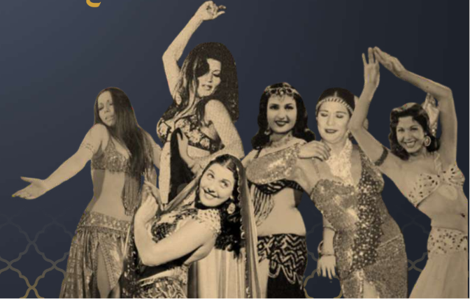
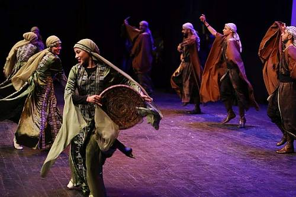
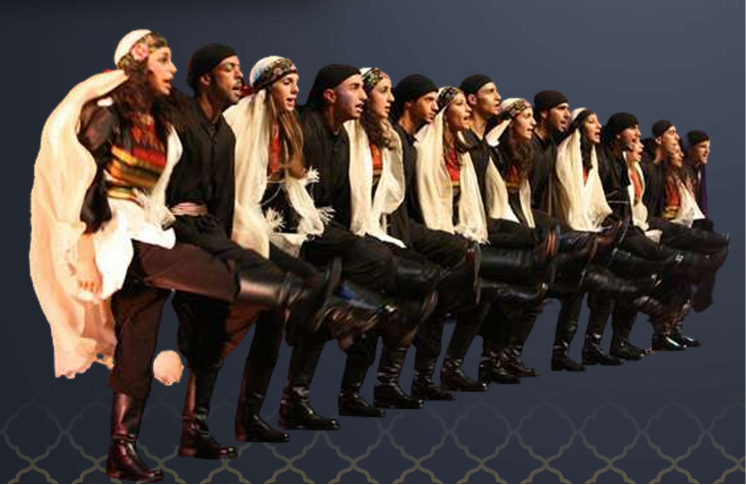

Estudamos em aula sobre a cultura árabe. Os árabes são um grupo etnolinguístico originário da Península Arábica cuja identidade cultural e histórica se baseia no idioma árabe. Eles compartilham uma identidade cultural que combina tradições, costumes e uma rica herança histórica. Podem ser encontrados principalmente em países do Oriente Médio e Norte da África. Embora grande parte deles sejam muçulmanos, os árabes também podem ser cristões ou pertencer à outros grupos religiosos.
Assistimos a um vídeo que explica bem sobre o conflito. Os conflitos entre Palestina e Israel começam a partir de 1948. Eles foram iniciados pela disputa em torno do território palestino. Essa rivalidade se iniciou com o crescimento da população judia na Palestina. Israel afirma que suas ações são em defesa de sua própria população, e os palestinos acusam Israel de sustentar um regime de perseguição
Durante a aula, assistimos algumas músicas árabes, em especial sobre a expressiva dança do ventre. Esta é uma prática milenar do Oriente Médio, constituída por movimentos sinuosos, isolamento corporal e uso do quadril. Além disso, foi realizada uma atividade rítmica baseada na dança do Dabke. Nela tínhamos que realizar determinados movimentos no tempo correto.


